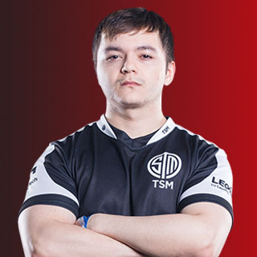

Le Dôme Protecteur est la capacité active de Gibraltar. Elle permet de jeter au sol un générateur de bouclier qui créera un dôme défensif tout autour de vous. Ce dôme est capable d'encaisser tous les tirs pendant 15 secondes.
Les joueurs peuvent passer à travers le dôme, seules les balles adverses sont arrêtées. Le dôme reste également là où il a été posé. Vous ne pouvez donc pas le déplacer. Faites également attention, le dôme n'est qu'une demi-sphère, ce qui signifie que vous n'êtes pas protégez des tirs venant du dessous.
Le Dôme Protecteur est l'outil idéal pour réanimer vos alliés lorsque vous êtes la cible de snipers. Son temps d'activité est plus long que le temps nécessaire à la remise sur pieds de deux coéquipiers.
N'hésitez pas à utiliser le dôme dès lors que vous êtes pris pour cible en le jetant à vos pieds. Il vous permet de couper le combat en deux zones et de forcer l'adversaire à être patient ou à se déplacer, tandis que rien ne vous empêche de tirer sur eux de votre côté.

Pilonnage Défensif est la capacité ultime de Gibraltar.
Vous jetez une balise qui servira de repère à des avions qui bombarderont toute la zone alentour.
En déclenchant la capacité, vous vous équipez de la balise comme d'une arme à part entière que vous pouvez ensuite jeter. Maintenez le clic gauche pour voir la trajectoire de lancer. Elle peut être lancée très loin.
Le bombardement est puissant, mais imprécis. Il est constitué de multiples petites explosions aléatoires dans une large zone, comme des goutes de pluie mortelles, plutôt que d'une grosse bombe. Il est cependant assez dangereux pour forcer les adversaires à se déplacer. Vous ne pouvez pas vous blesser avec votre propre bombardement. En revanche, il n'est d'aucune utilité si vous vous battez dans un batiment.
La capacité ultime de Gibraltar émet un son très puissant audible à de grandes distance.

Gibraltar peut activer un "bouclier d'arme" lui permettant de protéger une grande partie de son torse.Ce bouclier peut encaisser 50 points de dégat.
La bulle de gibraltar peut, sous certaine conditions, être mobile. Pour cela il suffit de placer la balise du dome sur un élément lui même mobile. Cela peut être, par exemples, un trident (véhicule du jeu).
Les réanimations dans le dome prennent moins de temps et affichent une animation différentes.(allié relevé par le col et une tappe dans le dos)
Membre de la team TSM FTX aux côtés de ImperialHal et SnipeDown. Son gameplay approche de la perfection comme le prouvent ses statistiques in game et son palmares en tournois.
